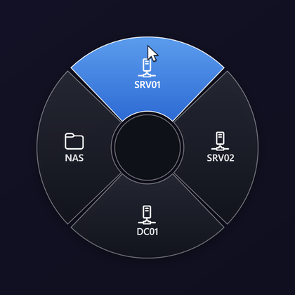
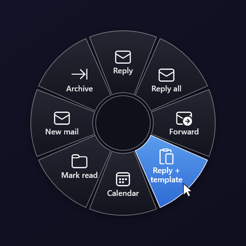
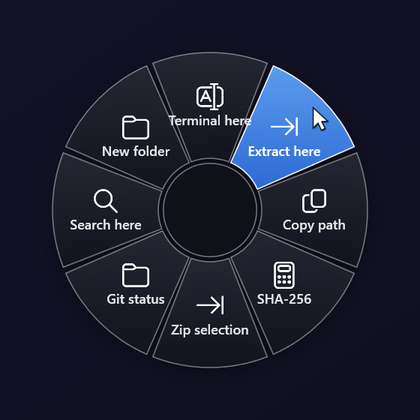
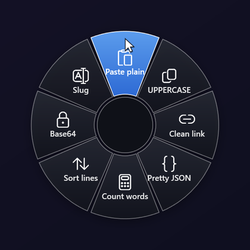

Mouse buttons
Open a ring with the side buttons, the middle button, or by holding the right button. A quick right click still opens the context menu.
Every feature, shown moving
Hold a key or a mouse button, flick toward a slice, let go. Below is everything that ring can do, each with a short demo. The ones marked Recorded are captured from the application on Windows; the rest are drawn with the same ring the app draws.
01 · The gesture
Every slice is one short flick away, in a direction that never changes. That is why a ring beats a menu: after a few days you stop looking.

RecordedHold the hotkey, move toward a slice, let go. A slice with dots holds another ring, which opens under the cursor, so a choice three levels deep is still one stroke. Tap the hotkey instead and the ring stays open for the mouse.
Up is the top slice, right the right one, and two arrows together pick the diagonal. Enter runs it. Hands on the keyboard never have to reach for the mouse.
With the ring open, type the first letters of a label and that slice lights up; keep typing to narrow it down. Works in any keyboard layout, Cyrillic included, and the letters never reach the app underneath.
Open a ring with the side buttons, the middle button, or by holding the right button. A quick right click still opens the context menu.
Hold Shift while you click and the slice runs without closing the ring, for when you need three things in a row.
Give each ring its own chord, or let several share one and decide by the app in front. Taken chords are detected and a free one is offered.
Games, videos, slideshows: hotkeys and hooks are released while a full-screen window is in front, and come back when you leave it.
02 · Knows where you are
RadialDeck looks at the window in front before it draws anything: which program, which files are selected, what text is highlighted.

RecordedOutlook gets Reply, Template and Calendar; Excel gets Sum and Freeze panes; Explorer gets Extract and Terminal here. Same gesture everywhere, the ring changes with the program. Match by program or window title, plain text or a regular expression.

RecordedSelect files in Explorer or on the desktop and flick: extract, zip, hash, convert, open a terminal in that folder. Commands get the selection as {file}, {files}, {dir}, {name} and {ext}.
Open the ring over a program the gallery knows (Excel, Teams, VLC, Blender and about ninety more) and RadialDeck offers a ring built for it. One click adds it; it shows up only in that program.
{selection} is whatever you highlighted in the app in front: search it, translate it, send it to a script.
A launch slice can bring the program forward if it is already running, and cycle through its windows on the next flick.
In a terminal, copying the selection uses the terminal's own shortcut, so nothing gets cancelled by a stray Ctrl+C.
03 · What a slice does
A slice is an action. These are the kinds there are, and any of them can sit in any ring.
Point at a Volume, Zoom, Tabs or Track slice and turn the mouse wheel: the value changes while the ring stays open. A click mutes, resets the zoom, opens a tab or plays and pauses.
One slice opens a ring of the windows you have open, with their icons. Flick to one and it comes to the front, minimised or not. Alt+Tab for people who think in directions.
The slice opens the Windows snipping overlay; mark an area and the text in it lands on the clipboard. Screenshots, scanned PDFs, error dialogs, video subtitles. It uses the OCR built into Windows, so nothing leaves your PC.
Programs, files, folders, websites and shortcuts, with arguments. Drop a file on the ring in Settings to make a slice for it.
PowerShell or cmd, hidden. The clipboard can go in, the result can be pasted, copied or shown as a notification.
Any chord, including media keys: Ctrl+Shift+Esc, Win+Shift+S, Play/Pause. The ring closes first, so the keys reach the right window.
Replies, signatures, addresses, with placeholders for the clipboard, the selected file or your home folder.
Keys, text, pauses and mouse clicks in a row, for the six-step chores. Pro
A slice that does whatever you just did again. Pro
Pin the window in front above everything else, and unpin it the same way.
Up to three levels, each opening under the cursor. Pro
04 · Clipboard and text
Copy, flick, paste. The transforms are built in, so there is no script starting up behind them and they work offline.

RecordedPaste without formatting, UPPER and lower case, clean tracking junk out of a link, pretty-print JSON, sort and de-duplicate lines, extract every e-mail address, Base64, transliterate Latin and Cyrillic, count words.
One slice opens the last things you copied; flick to one and it is pasted. The history lives in memory only, never on disk, and is gone when you quit.
05 · Make it yours
Build rings in Settings with a live preview, start from the gallery, and pass the good ones around.
Glass, Neon, Synthwave, Windows 7 Aero, Minecraft, Blueprint, Vault and more, with patterns, glow and their own fonts. Make your own in the browser with the theme studio and share it with the community.
The Share button copies a link with the whole ring inside it. Whoever opens it sees every slice first, then adds it to RadialDeck unsaved, looks it over and presses Save. Slices that run commands are flagged before anything runs.
A gallery for more than ninety programs, searchable, each slice with a Test button before you add it.
Click a slice to edit it, drag to reorder, undo and redo. What you see is the ring you get.
Pin a slice to a position and it keeps its direction when you add or remove others.
Programs get their own icon automatically; otherwise pick from the Windows icon set or use an emoji.
From 70 to 150 percent, sharp on every monitor and scale, mixed-DPI setups included.
English, Bulgarian, German, French, Spanish, Italian, Portuguese, Polish, Turkish, Russian, Ukrainian, Japanese, Chinese, Korean.
06 · Teams and scripts
Built by someone who deploys software for a living, so it installs quietly and does what the script says.
--menu "Name", --reload, --pause, --settings drive a running copy from AutoHotkey, a Stream Deck or any script. Pro
--config \\server\share\rings.json points every machine at one file; it survives updates and the autostart toggle.
Per user without an admin prompt, or machine-wide with /ALLUSERS. Deploys with Intune or any other tool that runs an installer.
Edit it by hand and the ring updates at once; a mistake keeps the previous ring and names the line.
07 · Light and private
Written in C# for Windows, with no browser engine inside, and it keeps to itself.
Nothing about you or your rings is sent anywhere. The one network request is the optional update check.
The keyboard hook exists while the ring is on screen and records nothing. The rest of the time there is only the hotkey.
About 57 MB of memory when idle, and the ring is drawn before your hand finishes the flick.
New versions download quietly and apply at the next start, or right away with one click.
Free for two rings, forever. Windows 10 1809+ and 11. A 56 MB download, no runtime to install.
Download for Windows